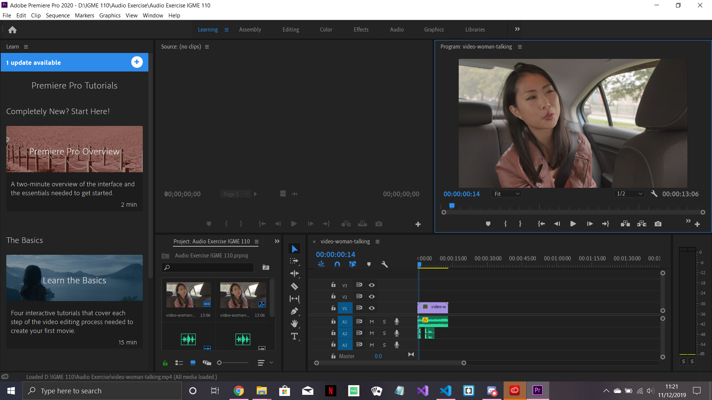

A video of a woman in a car realizing that the driver had taken a wrong turn. The audio used are an ambient song in the background, some monologue for the woman recorded by me, and driving directions created by a text-to-speech software.
By: Pexels
By: The Ambient Light